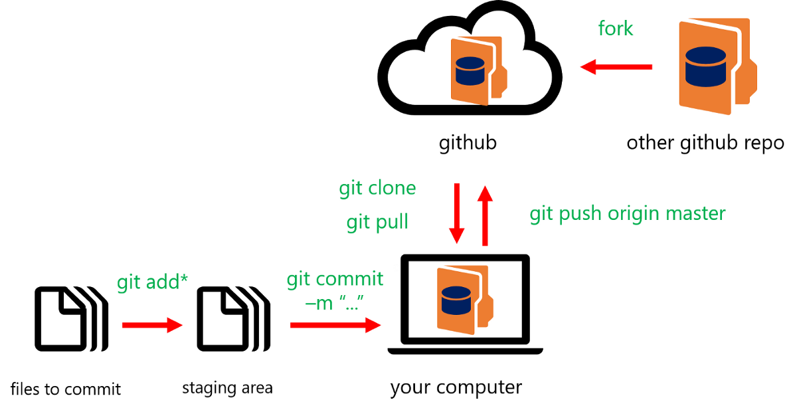

Github is a remote repositry which is an hosting service for git repositories.
We will all have git repositories in our local , so once we have done our code we will
commit the changes into our local repositry.
Github is a service which will host all our repositories remotely and those
repositry we can share within the team or we can share the repositories globally.
What is Git?
Git is a revision control system used to track changes in computer files.
It is a tool to manage our code and file history while coordinataing work remotely or globally on
those files with other .
In Git, We can create the branches , we can merge the branches , resolve the conflicts .
Some points on Git vs GitHub
Git is the tool , while Github is the service to use Git.
Git is a simple tool which we can install in our local , which acts as a local repositories
where as github is a service which acts as a remote repositry , we can store or we can have all the repositories globally in a Github .
Git stores and catalogs changes in code repository whereas Github provides a platform as collabration effort to bring teams together.

List of some most used Git Commands.
1. Git Push
To make all our committed changes available to our teammates, will have to push them to the
remote origin.
2. Git Pull
we would want to have the latest updates from teammates as well!
The git pull command allows us to fetch all the changes that our teammates pushed and automatically
merge them
into our local repo.
3. Git Commit
Git Commit command like a checkpoint in our development process.
It’s commonly used to save our changes after completing a specific work .
Every time we commit our code changes, we also include a message to briefly describe the changes
we made.
This helps other team members quickly understand what was added, changed, or removed.
4. Git Init
The git init command is usually the first command you’d run in any new project .
we use it to initialize an empty repo.
5. Git Clone
The git clone command is used to download the source code from a remote repository like GitHub.
3. Git Branch
Branch is one of the most important functionalities of Git. This allows teams
to work on the same code base in parallel. Say, If two team are working on same code base then by creating a separate branch for each feature, both team can work on the same code base in parallel without having to worry about conflicts (at least while they are writing the code).
I will keep adding more points to this list as my learning grows...